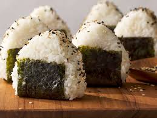

Onigiri (Japanese Rice Balls)
Prep Time: 20 minutes
Cook Time: 15 minutes
Servings: 6
Ingredients:
- 3 cups Japanese short-grain rice
- 3 ½ cups water
- Salt, to taste
- ½ cup fillings (tuna mayo, pickled plums, or salmon)
- 6 sheets of nori (seaweed), cut into strips
- Sesame seeds (optional)
Instructions:
- Cook the rice: Rinse the rice under cold water until the water runs clear. Place the rice and water in a rice cooker or a pot. Cook until done, and allow it to cool slightly.
- Prepare your filling: Choose your preferred filling (tuna with mayo, salted salmon, or umeboshi). Set aside.
- Shape the rice balls: Wet your hands with water and sprinkle them with salt to prevent the rice from sticking. Scoop about ⅓ cup of rice and flatten it in your palm. Add a teaspoon of filling in the center, then gently fold the rice around the filling to form a ball or a triangle.
- Wrap with nori: Once shaped, wrap the rice ball with a strip of nori. Optional: Roll in sesame seeds for extra flavor.
- Serve: Let the onigiri rest for a few minutes, allowing the nori to soften slightly before enjoying.

Perfect for a quick snack or packed lunch!